@Cesky Krumlov @ Nov 07, 2009
非常喜欢这座靠近奥地利边境的Cesky Krumlov（捷克克鲁姆洛夫）小镇，当天出了太阳，城市里没有的那种静谧的氛围让人想多停留一会儿。这个小镇入选世界文化与自然遗产名录，成为游人来捷克必定造访的地方。小镇上的历史建筑物超过300座，同时又是一座文化、会议与旅游中心，经常举行国际音乐节，文艺复兴时期音乐节。它被U型河弯分割成旧城区和城堡区。我们到达的早晨许多商店还没有开门营业，小镇上寥寥无几的行人，在小街小巷里穿行的大多是游客。
里面有一座规模不小的城堡花园，是爱根堡家族时期兴建，20世纪后按原来的设计重新整建。最美的是中央的“瀑布喷泉”，有捷克第一美泉之称。
小镇窄窄的主干道上铺的青石板，汽车得多好的悬挂才能长年累月的行驶在上面啊？在Cesky Krumlov还有一项热门项目就是划艇。
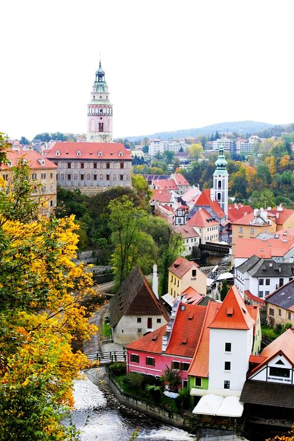
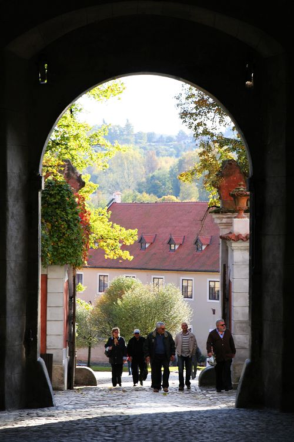

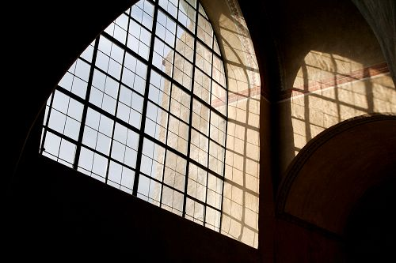


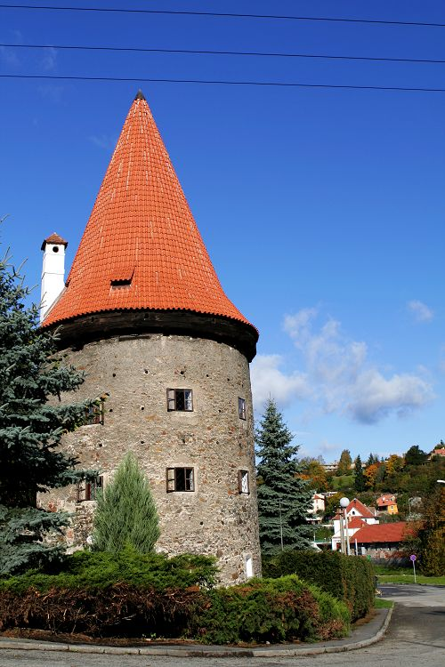
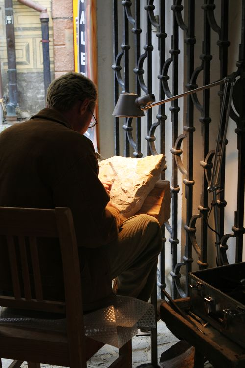
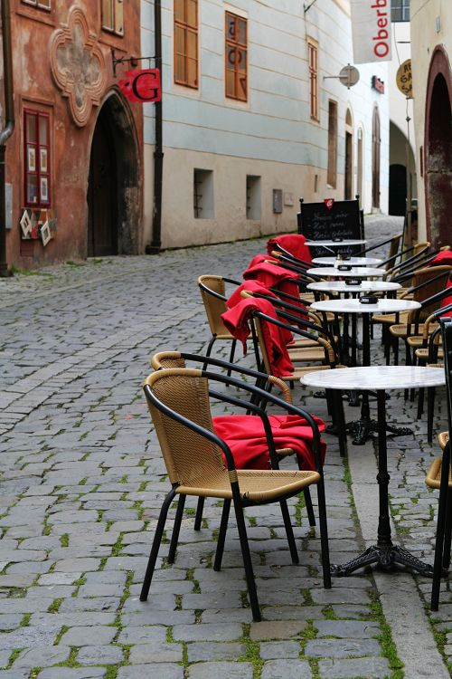


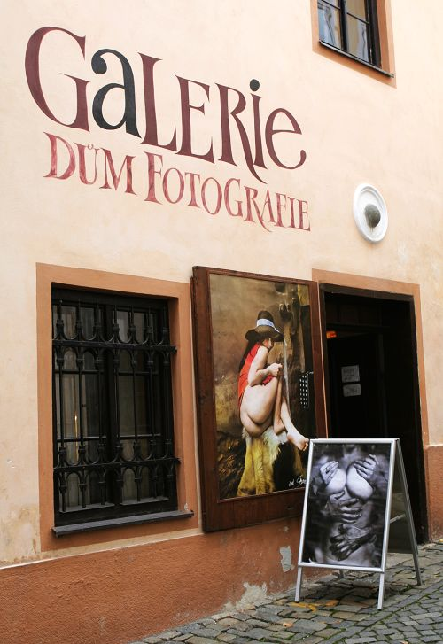
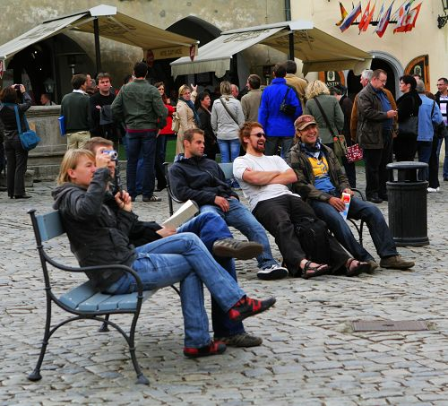
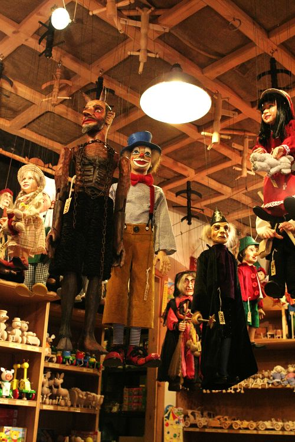

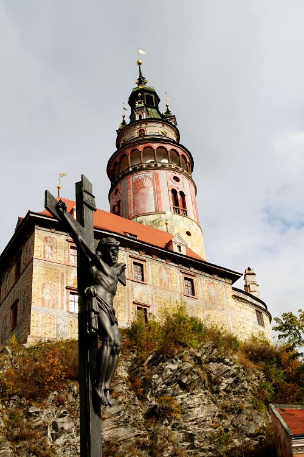

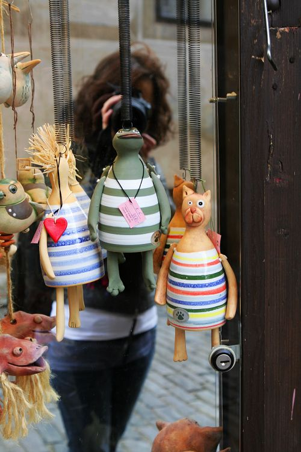


我们在这里遭遇旅行途中最咸的一顿饭，连土豆都是咸的，那里的人真的对美食要求不高啊，好象只剩下对咸味的偏好，烹饪太粗糙了。
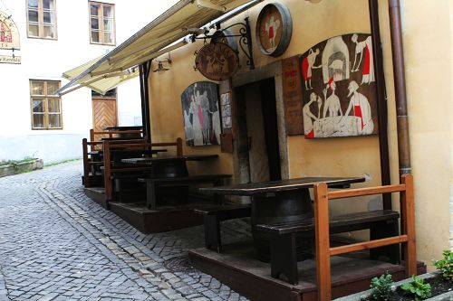
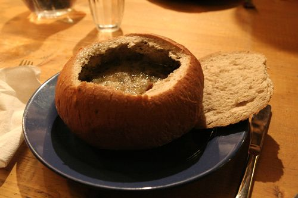
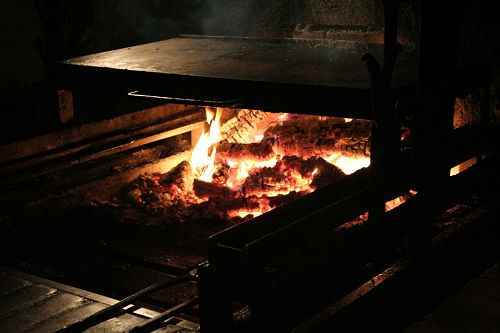
22 Responses to “@Cesky Krumlov”
2009-11-07
你第一张的欧洲小镇拍得真美，比明信片里的照片拍得还要美。
2009-11-07
欧洲小镇的生活是多宁静啊，感觉时光在那都凝固了！
2009-11-07
如何才能看到其他没有晒出来的美好？
2009-11-08
我和旗旗一起看的，惊艳了，惊艳了！！
2009-11-08
你拍的照片真好。我得好好学习。。
2009-11-08
瞧我冻得。。。
2009-11-08
景色好美啊！
2009-11-08
漂亮得让人晕了，头子用一只还是旅行中会换镜头？
2009-11-08
omg, christina, u do have a pair of good eyes for the camera!!!
2009-11-08
好好看啊。我喜欢那只伸长脖子看你的狗，爱因斯坦巫师，红桌布，墙上的莎士比亚，龙凤眼木猫，鸭蛋绿墙还有所有的光。最喜欢开窗营业的伙计那张。
2009-11-08
光光看得很仔细呢！
那些户外咖啡椅上的红色毯子是给客人保暖用的，以及我自己也很喜欢注视我的那只狗和鸭蛋绿的墙。
2009-11-08
呵呵，我在你拍这个书店买了本三人同舟。
2009-11-08
看来看去，我就就一个感受，外面真干净，济南真脏。
2009-11-09
喜欢第一张~~美~~小镇的生活好悠闲啊~~时间都静止了~~
2009-11-09
成堆的落叶，却不让人感到凉意。想到的反而是一个季节的沉淀。喜欢。
2009-11-09
童话故事的图片。
2009-11-09
我和问问看一张惊叹一张。。好童话好优美的城市啊！
2009-11-10
我想知道，是什么相機啊？又方便帶，拍的又這么漂亮。
2009-11-10
canon 350D+canon24-70mm，很重啊，并不方便携带。我还带了另两个镜头，每天背着一个大背包行走，还是挺辛苦的。象我这样对摄影特别有热情的人，当然不会觉得苦。
2009-11-10
很喜欢第六张照片，穿着红衣服看书的女孩，看上去像极了油画！
2009-11-19
从九点过来的~
太喜欢你拍的照片了，以至于把你欧洲行记的一系列都看完了。
我也去过瑞士，很喜欢那里的山水和凝住时光的气息。
从前我一直觉得照片始终没有景色本身来得美丽，所以总是站在美景里用眼睛用心记下那些画面。
你的照片却好像是开了一扇通往那些美景的窗口~
真的很美！
2009-12-07
那伸长脖子的是只猫啊，小胡须都隐约可见
Leave A Reply
存档只读，评论已关闭。